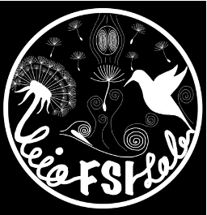
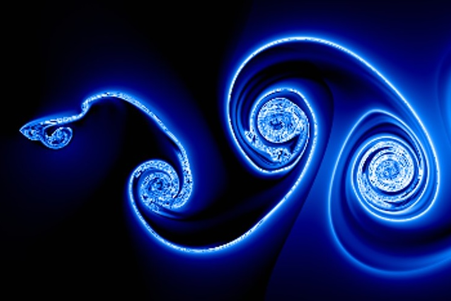
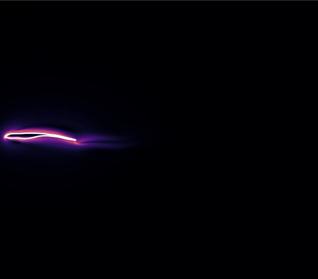
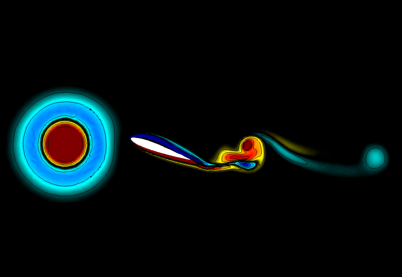
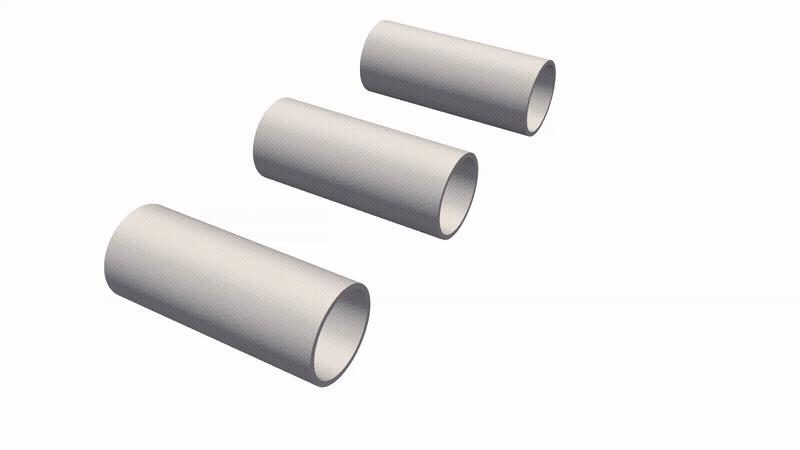
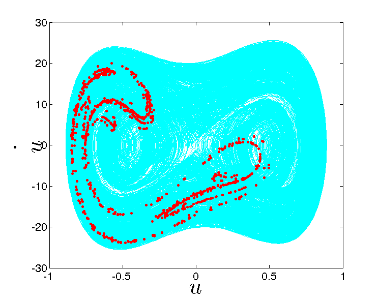
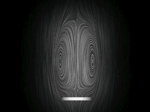
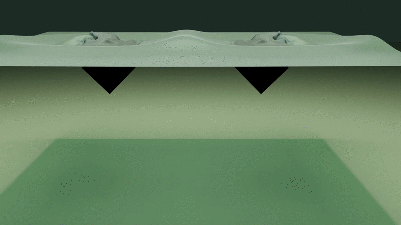
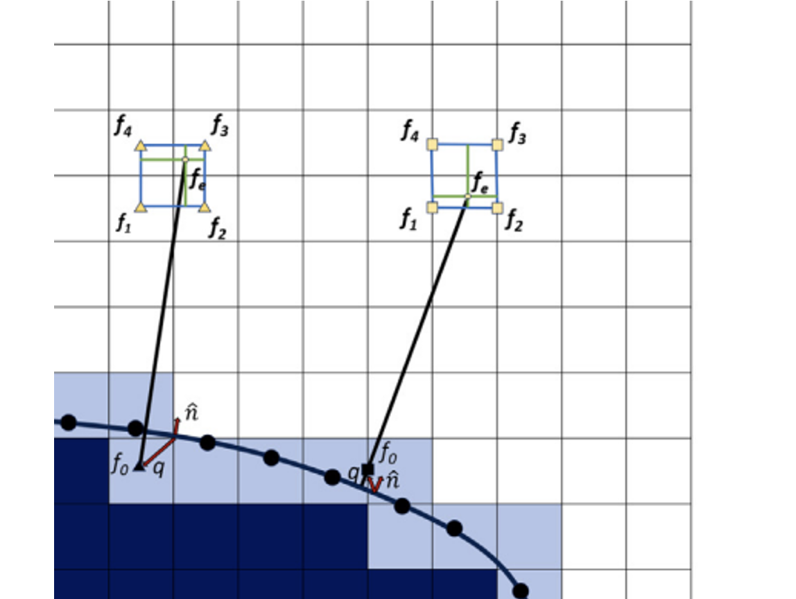

Aerospace Engineering, University of Birmingham

We combine high-fidelity simulation, supercomputing and data-driven modelling to uncover how flexible wings, fins and seeds interact with air and water, and turn those insights into better drones, underwater vehicles and energy harvesters.
About the labWelcome to the Bio-inspired Fluid-Structure Interaction Laboratory (BioFSILab) in Aerospace Engineering at the University of Birmingham. We study how flexible structures and moving bodies interact with the unsteady flows around them, taking inspiration from flapping insects and birds, swimming squid and other natural flyers and swimmers. Our work combines high-fidelity fluid-structure interaction simulations, development of GPU-accelerated and open-source flow solvers and data-driven reduced-order models with experiments carried out alongside our collaborators in the UK and abroad. We use these insights to design better micro air vehicles, soft underwater robots and marine renewable energy devices.

Flapping Wing Aerodynamics Vortex formation, wake transitions and the route to chaos behind flapping wings.
Active & Passive Morphing Wings Flexible and shape-changing wings that tame wakes and adapt to flight conditions.
Gust Response of Passive Flyers How free-falling and gliding bodies ride gusts to stay aloft for longer.
Squid-Inspired Jet Propulsion Flexible nozzles that store and release elastic energy to amplify pulsed jets.
Aeroelasticity & Flow-Induced Vibrations Flutter, stall-induced oscillations, vortex-induced vibrations and their control.
Permeable-Body Aerodynamics How flow through porous plates and permeable disks reshapes wakes and drag.
Wave-Structure Interaction & Energy Harvesting Flexible structures that interact with waves and flows to harvest energy.
GPU Solvers & Data-Driven Modelling GPU-accelerated immersed-boundary solvers, reduced-order models and optimisation.Outstanding early-career researchers based outside the UK are invited to get in touch about fellowship opportunities in computational fluid dynamics, fluid–structure interaction and multiphysics modelling with BioFSILab at the University of Birmingham.
The Royal Society call is expected to close in March 2027 (exact dates to be confirmed). Please get in touch early so there is time to develop a strong application.